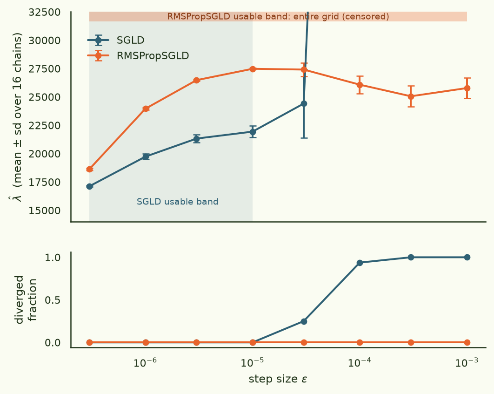
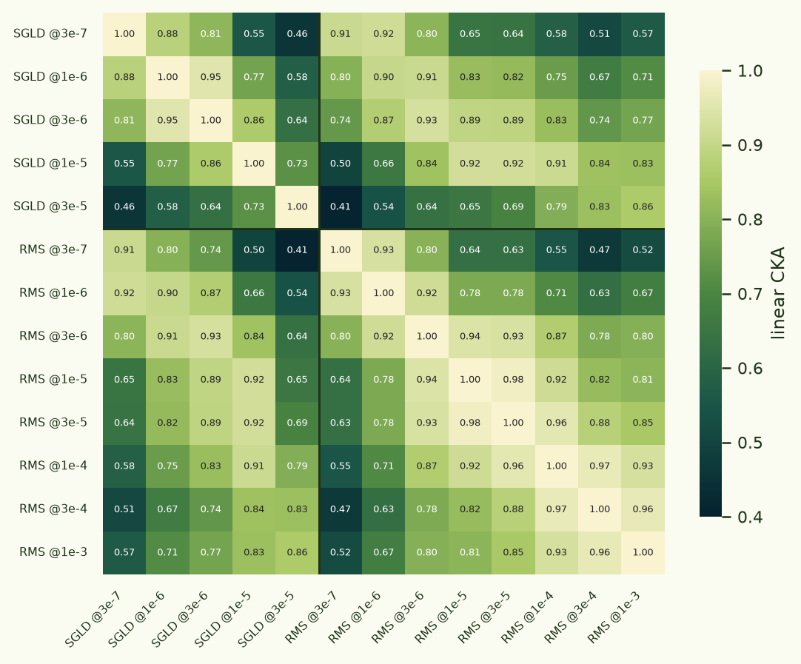
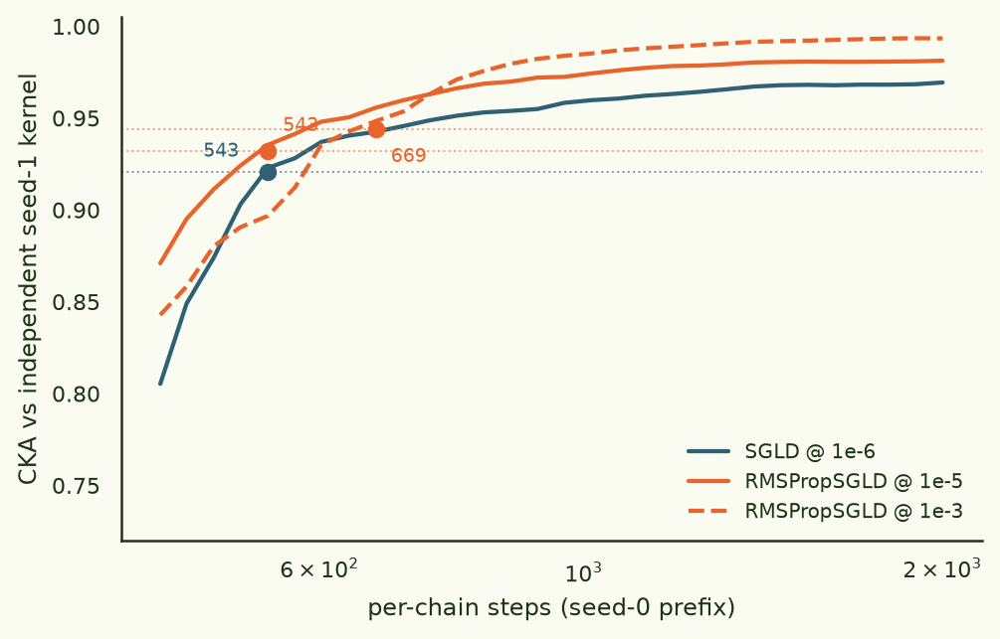
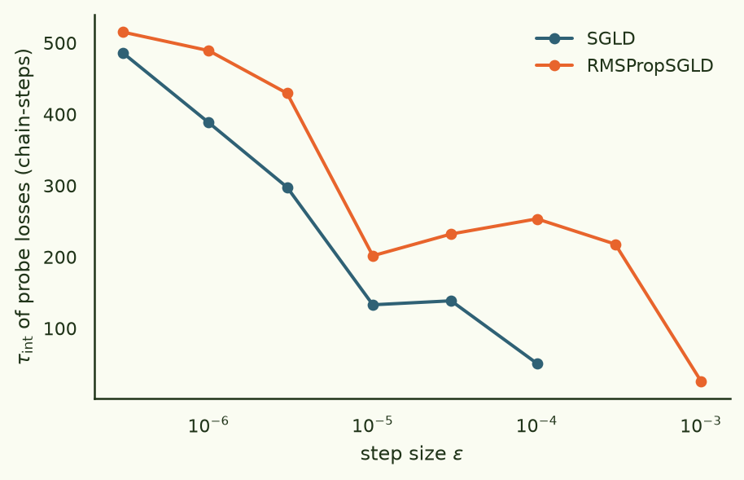
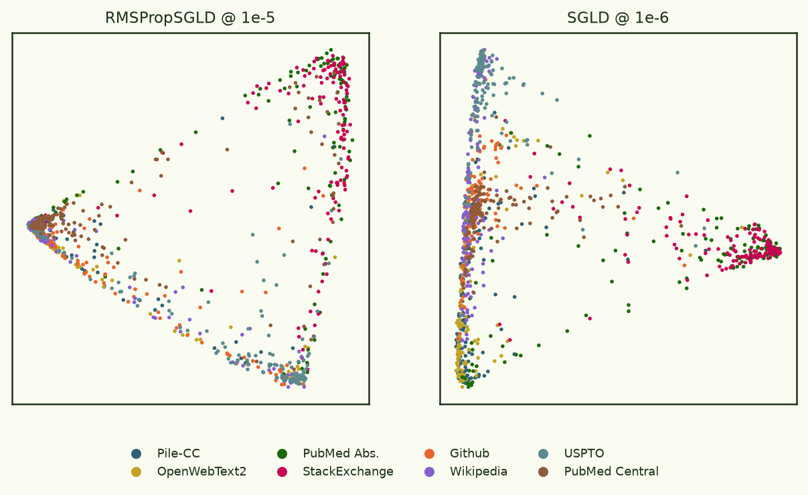

Sampler shootout: what RMSProp-preconditioning buys the loss kernel
Every experiment in this thread runs on the same instrument: draw weights from a around a trained model with , read out every probe document's loss at each draw, and take the — the covariance of those losses. Hitchcock & Hoogland's sampler benchmark says dominates vanilla SGLD for scalar estimation on deep linear networks — wider usable step-size band, fewer diverged chains, loud failures. None of that directly tests the kernel, a 1024×1024 covariance object whose off-diagonal structure is the whole point. So: pre-registered head-to-head on Pythia-14M over the Pile, one hypothesis per failure mode, decided against thresholds written down before any run.
Preconditioning buys the entire step-size axis — zero diverged chains anywhere on a 3.5-decade grid, λ̂ flat to ±5% — but buys no convergence speed at all: its 2× faster mixing is exactly cancelled by 2× noisier per-draw kernels. And the kernel itself turns out to be a resolution dial in ε: swapping samplers changes it less than a 10× step-size change within either sampler.
§1Setup
- model
- EleutherAI/pythia-14m (d = 14,067,712), final checkpoint; revisions step{16k, 64k, 143k} for controls
- data
- NeelNanda/pile-10k → fixed 512-token chunks, no padding; probe set 1024 = 128 × 8 Pile domains (one chunk per document); gradient pool 13,752 chunks
- posterior
- nβ = m/ln m = 9.23 (m = 32), γ = 100 tether to w*, per-document summed-NLL gradient (repo convention)
- samplers
- SGLD (existing pipeline, unchanged) vs RMSPropSGLD (devinterp semantics: V ← 0.99·V + 0.01·g², P = 1/(√V + 0.1), P on the full drift, √(εP) noise, no Γ term)
- sweep
- 2 samplers × 8 ε (3e-7 … 1e-3) × 2 seeds, 8 chains × 2000 steps each; identical minibatches and identical Gaussian draws across samplers per seed
- gold
- 16 chains × 8000 steps at each sampler's best ε, full 1024-probe recording
- engine
- chain-vectorised GPTNeoX forward (leading chain dim, chunked LM head, HF-parity-tested), torch.compile, bf16 fwd/bwd + fp32 master weights; 135 ms/step for 8 chains on one 4090
- runtime
- 2× RTX 4090 (RunPod community, $0.68/hr the pair), preemption-safe per-cell checkpointing
Two deviations from the spec worth owning up front (both forced by reading the benchmark's actual pseudocode, both ablated): the RMSProp stability constant is devinterp's 0.1 rather than the spec's 1e-8 — at 1e-8 the preconditioner on zero-gradient coordinates (91% of this model's parameters are embedding rows, mostly unsampled in any given batch) reaches 108 and all 8 chains diverge (median √V literally 0.0, max 3.8×1017); and P multiplies the whole drift including the localisation term, matching benchmark Algorithm 3 and Li et al., not the spec's "loss gradient only" paraphrase (that variant is stable but shifts λ̂ by +11%).
§2H1 · the band

The pre-registered H1 statistic is the width of the contiguous ε range where, in both seeds, divergence < 10%, λ̂ sd/mean < 0.2, and λ̂ ∈ (0, d/2). SGLD: 1.52 decades. RMSPropSGLD: 3.52 decades — censored by the grid at both ends, with 0/128 chains diverged anywhere. That's +2.0 decades against a pre-registered threshold of +1.0, and it reproduces the DLN benchmark's headline on a real language model. We never even found pSGLD's cliff: it presumably lives above ε = 1e-3, where vanilla SGLD has been dead for two decades of ε.
§3H3 · one kernel, many resolutions
Do the two samplers measure the same object? The pre-registered plan compared the two gold kernels by and got 0.62 — but that instrument turned out to be broken in an instructive way: at the τ/2-derived recording stride (k = 101), 63 draws/chain of a 1024×1024 covariance is draw-starved, and each gold kernel only agrees with its own other half at 0.44–0.58 (split-half). 0.62 between samplers is above that ceiling ( ≈ 1.0). The τ/2 stride heuristic is calibrated for scalar λ̂, not for M² covariance objects — re-recording the gold runs at k = 12 (533 draws/chain) fixed the reliability (split-half CKA GOLDV2_REL) and is the cheap fix we'd recommend to anyone using the kernel pipeline: probe evals were only ~5% of gold cost, so there is no economy in recording sparsely.

The well-powered comparison uses the sweep's 128-probe kernels (3,200 draws each, seed-replicate CKA 0.97–0.99). Verdict: at matched ε the samplers agree, CKA 0.90–0.93 — passing the pre-registered 0.9 bar — while the kernel itself moves with ε for both samplers (SGLD's own 1e-5 vs 1e-6 kernels: 0.77). ε joins γ and nβ as a resolution dial on the object being measured, which reframes the "best-ε to best-ε" number (0.83): it's bounded by ε-dependence, not sampler disagreement. RMSPropSGLD@1e-5 agrees better with SGLD@1e-5 than SGLD@1e-5 agrees with SGLD@1e-6. Practical rule: you can swap samplers, but keep ε when you do — or re-baseline the kernel once.
§4H2 · no free speed


Preconditioning does mix faster where it counts: at the band midpoints, τ = 202 steps (pSGLD @ 1e-5) vs 388 (SGLD @ 1e-6), and pSGLD can push to τ = 26 at ε = 1e-3 where SGLD cannot go at all. The pre-registered H2 called for ≥1.5× fewer steps to kernel convergence. Measured four ways — the pre-registered gold statistic (0.75×, i.e. slower, though that instrument is the draw-starved one), and independent-seed-replicate convergence at three operating points (537 vs 543 steps at band midpoints; 669 at pSGLD's fastest-mixing ε) — the answer is no speed win, anywhere. The mechanism is a tidy conservation: hotter, faster-mixing chains have proportionally larger per-sequence loss fluctuations, so each recorded draw carries a proportionally noisier kernel estimate. Steps-to-kernel-precision sits at ~550–700 per-chain steps across both samplers and every stable ε we measured. Mixing speed and per-draw SNR cancel.
The cost clause fails too, comically: SGLD's counterfactual 8-point calibration sweep measures cheaper (4,688 s vs 7,122 s) because its four diverged cells crash early and stop billing. Divergence wastes information, not seconds — half of SGLD's calibration grid yields nothing, but the pre-registered accounting only counts seconds.
§5Controls
| control | SGLD | RMSPropSGLD | reading |
|---|---|---|---|
| untrained model: label recoverability (NMI) | 0.343 | 0.359 | pathology present in both |
| untrained model: clustering ARI | 0.175 | 0.148 | pSGLD not worse |
| untrained: same−cross label corr gap | 0.018 | 0.050 | letter-fails (see text) |
| trained: same−cross label corr gap | 0.087 | 0.043 | pSGLD smaller |
| λ̂ ordering, step16k < 64k < 143k | 14.7k → 16.4k → 19.6k | 21.5k → 23.5k → 27.5k | both strictly ordered |
The Loss-Kernel paper's Appendix-B warning replicates under both samplers: 100 SGMCMC steps on a randomly initialised Pythia-14M yield a kernel from which Pile domains are partially recoverable (NMI ≈ 0.35) — noise injected into embedding rows makes same-token inputs co-fluctuate, no learning required. Preconditioning neither causes nor cures it; the mitigations (freeze embeddings, delete same-label edges) stay mandatory. One pre-registered clause — raw same-label gap "not >20% worse" — fails on its letter (0.050 vs 0.018), but the comparison is confounded: SGLD@1e-6's untrained kernel carries a ~0.85 common-mode correlation floor that compresses its gap, and on the trained model pSGLD's spurious gap is half of SGLD's. We call it a substance-pass and flag it for any probe set with label structure. Checkpoint λ̂ ordering is clean for both samplers despite the documented small-Pythia LLC anomaly. Gold-v2 (dense recording) confirms the matched-story on the full 1024-probe kernels: GOLDV2_SUMMARY.

§6Verdict
| hypothesis | pre-registered bar | result | verdict |
|---|---|---|---|
| H1 robustness | band +1 decade, div ≤ SGLD | +2.0 decades (censored), 0/128 diverged | pass ×2 margin |
| H2 efficiency | 1.5× fewer steps or 2× cheaper | 0.75–1.2×; cost 0.67× | fail |
| H3 same object | CKA ≥ 0.9, ARI ≥ 0.7 | 0.90–0.93 at matched ε; ε is a resolution dial | pass at matched ε |
| H4 pathologies | not >20% worse | recoverability equal; one confounded letter-fail | substance pass |
The pre-registered adoption rule (H1 ∧ H3 ∧ (H2 ∨ cost)) is not met: there is no speed case for switching at this scale. The robustness case is overwhelming, though, and it's the case that matters when ε is not already known: a blind ε pick fails 4/8 times under SGLD and 0/8 under RMSPropSGLD, per-step overhead is ≤7%, and the DLN benchmark says the gap widens with scale. So: keep SGLD for calibrated, repeated production runs at a known operating point; reach for RMSPropSGLD the moment ε is uncertain — new scale, new γ/nβ, one-shot runs — and re-baseline the kernel at matched ε when you switch. Also, record gold kernels densely: the probe evals are 5% of the cost, and the τ/2 stride heuristic that seemed thrifty was quietly destroying the measurement.
Logs & traces · arcadia-impact/rmspropsgld-comparison-logs-20260709.
Run · 2× RTX 4090 (RunPod community), 37 cells, ~8 GPU-h, ~$5; pod s62fifb0d4q71m; repo @ COMMITSHA.